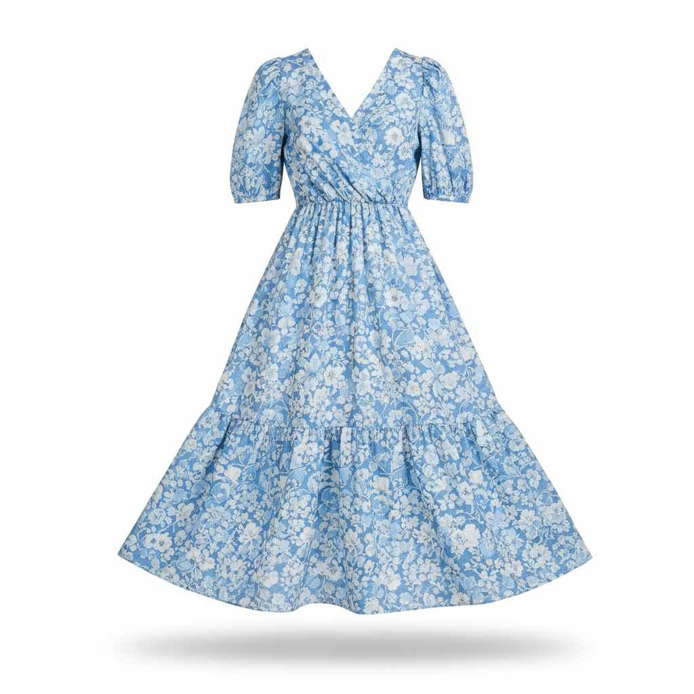

Quick start
-
gen_imagefunction has deprecated at 0.17.0. -
gemini.Rwill usenano_bananaas default image generation function.
library(gemini.R)
prompt <- "Create a picture of a nano banana dish in a fancy restaurant with a Gemini theme"
nano_banana(prompt, output_path = "gemini-native-image.png")
Edit Image
Edit Image will require image file and prompt to guide edit.
prompt <- "Create a picture of my cat eating a nano-banana in a fancy restaurant under the Gemini constellation"
nano_banana(prompt, type = "edit", img_path = "gemini-native-image.png", output_path = "edited_image.png")
Transfer Image
Transfer Image will require 2 image files and prompt to guide.
Use below images

prompt <- "Take the blue floral dress from the first image and let the woman from the second image wear it."
nano_banana(prompt, type = "transfer", img_path = "dress.png", img_path2 = "model.png", output_path = "transferred_image.png")